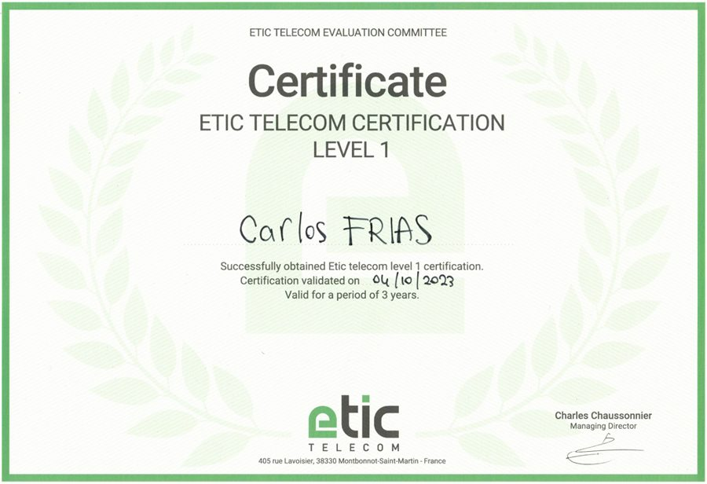
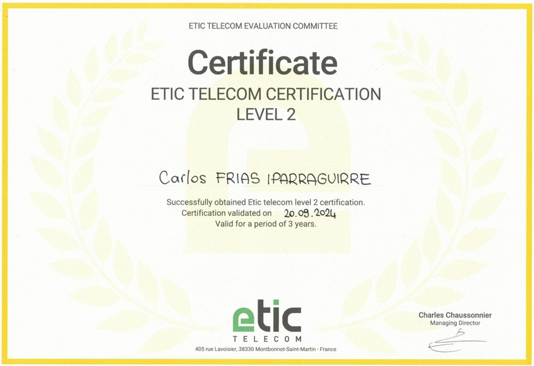
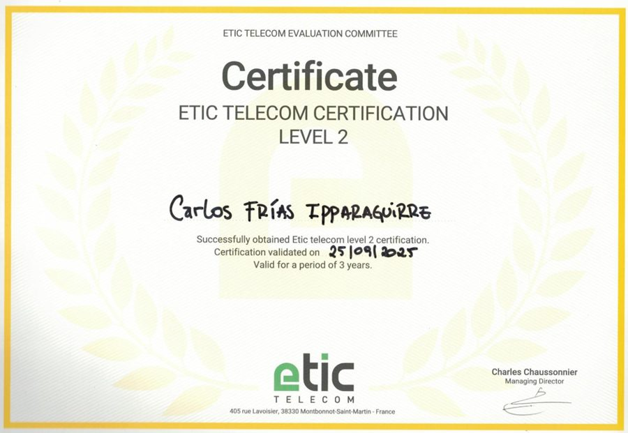
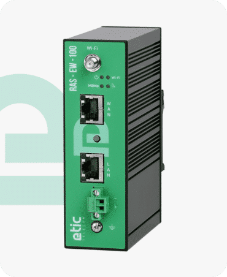
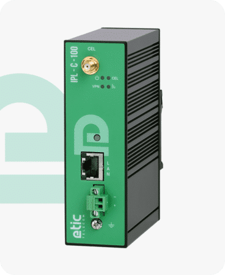
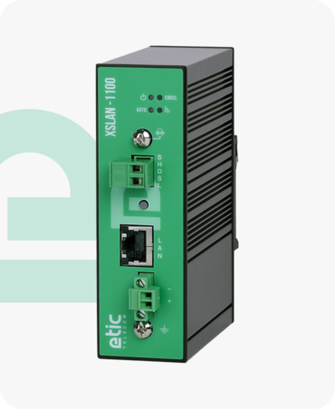
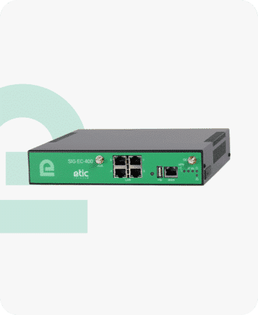
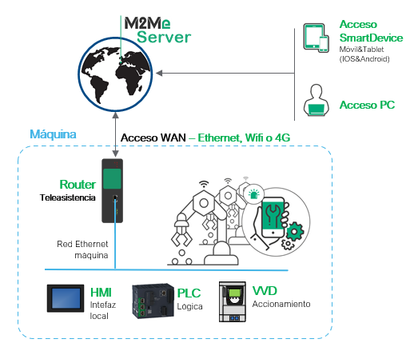
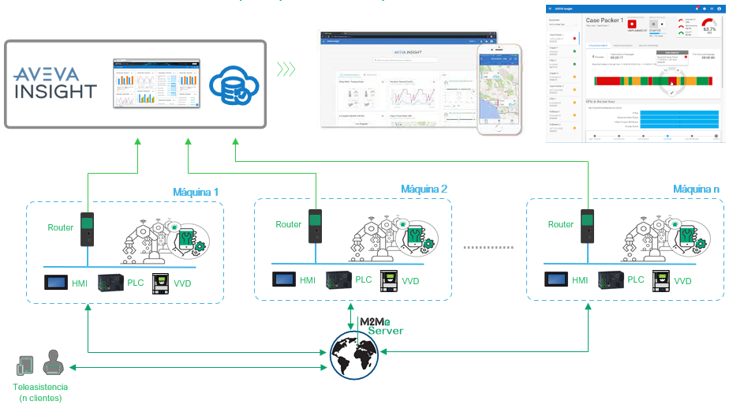

PRODUCTOS
Productos ETIC Telecom en España
Somos los distribuidores especialistas de ETIC Telecom en España y los únicos con certificación de soporte técnico Nivel 2, el máximo nivel reconocido por ETIC en Europa. Los routers RAS e IPL cuentan además con la certificación de ciberseguridad IEC 62443-4-2. Los equipos que suministramos incluyen servicios y soluciones exclusivas, disponibles únicamente a través de nuestro canal.
Certificaciones oficiales ETIC Telecom

Certificación Nivel 1 — 2023

Certificación Nivel 2 — 2024

Certificación Nivel 2 — renovada 2025
Qué ventajas te aportamos
Soporte especialista garantizado sin coste
Te acompañamos cuando lo necesitas, con soporte técnico especialista y formación.
Gestión simplificada para tus clientes
Nos encargamos directamente de las licencias M2Me (PC y App), evitando trámites al distribuidor.
Especialización reconocida por ETIC
Único distribuidor con soporte Nivel 2 en Europa desde 2017, certificación renovada en septiembre de 2025.
Gestión rápida de consultas
Todas las consultas se gestionan directamente con nuestro equipo en España, sin intermediarios.
Más valor por el mismo equipo
Los routers RAS incluyen Collect&Alert sin coste, con alarmas y publicación de datos vía MQTT/HTTP.
Integración lista para usar
Conectores nativos con Aveva Insight, desarrollados por ETIC Telecom con nuestra colaboración.
ETIC Telecom
Nuestras gamas de producto
Cuatro familias que cubren todo el ciclo: desde el telemantenimiento de una sola máquina hasta la interconexión segura de una planta completa.
RAS · Machine Access Box
Telemantenimiento remoto de máquinas

Routers de acceso remoto que establecen una conexión VPN segura entre la máquina y el técnico, desde PC, tablet o smartphone (iOS/Android). Modelos Ethernet, celular 3G+/4G e híbridos con Wi-Fi y puertos serie RS232/RS485 para integrar equipos legacy.
Modelos disponibles:
IPL · Router Industrial
Interconexión segura de equipos industriales

Routers VPN industriales con funciones avanzadas de enrutamiento y firewall según los estándares de ciberseguridad del mercado. Conectividad Ethernet, Wi-Fi, celular y ADSL, con modelos de failover dual. Es la familia que más desplegamos en nuestros proyectos, con el IPL-C-100-LW como modelo de referencia.
Modelos disponibles:
XSLAN / XELAN · Ethernet Extender
Ethernet sobre el cableado de cobre ya instalado

Convierten un simple par de cobre telefónico en una red Ethernet, sin obra civil. Gama SHDSL (XSLAN, hasta 15 Mb/s) y gama SPE (XELAN, consumo y latencia mínimos). Es la tecnología con la que multiplicamos por más de 1000 el ancho de banda de nuestros clientes sin tocar el cableado existente.
Modelos disponibles:
SIG · Servidores VPN
Concentrador central para toda la instalación

Concentradores VPN industriales que centralizan y protegen las conexiones remotas de una planta completa, con enrutamiento y firewall de nivel empresarial. Conectividad Ethernet, ADSL o celular 4G, y variante en máquina virtual.
Modelos disponibles:
RAS: acceso remoto y telemantenimiento sin límites
Los routers ofertados incluyen licencia de conexión con el servidor M2Me para realizar una conexión VPN segura a la instalación desde el ordenador, tablet o smartphone del cliente.
Sin costes de suscripción
La solución M2Me no tiene coste de suscripción: se paga el router y listo.
- Se pueden conectar a un servidor tantos equipos RAS como se desee, sin límite de dispositivos
- La licencia está incluida en el precio del router, sin cuota de renovación anual
- Acceso desde PC, tablet o smartphone (iOS/Android) sin coste por el acceso cliente ni por la app
Funcionalidades principales de telemantenimiento
- Editar el programa del PLC
- Parametrizar variadores de velocidad
- Modificar el programa de la HMI
- Monitorizar el comportamiento de los equipos
- Controlar máquinas y procesos
- Acceder a los webservers de los equipos
Ciberseguridad
- Todos los accesos a la máquina están controlados
- Acceso mediante un servidor de acceso remoto (M2Me Server)
- Requiere certificado de seguridad, usuario y contraseña
- Sin abrir puertos

Aporte de valor en telemantenimiento
- Mayor eficiencia en mantenimientos
- Reducción de costes de desplazamiento
- Mejora de la flexibilidad de uso
- Desarrollo de servicios de control remoto de máquinas y líneas
Collect&Alert: funcionalidades adicionales incluidas por eXDCi Solutions
Los routers RAS permiten leer información mediante los protocolos ModbusTCP u OPC UA desde los equipos de campo. Cada equipo puede comunicar hasta 128 variables con los dispositivos de la LAN, configurables sin programación desde su servidor web integrado.
Una vez recogida la información, el router RAS ofrece múltiples opciones de uso:
- Envío de alarmas por email o SMS (SMS incluido sin coste en routers con WAN celular)
- Almacenamiento local en memoria interna del router, con envío diario de datos en formato CSV
- Conexión directa con la nube: conectores nativos con Aveva Insight, Store4Me, Siemens Mindsphere y Cumulocity, además de compatibilidad HTTPS y MQTTs con otros sistemas
La capacidad de almacenamiento y el SMS incluido dependen del modelo de router seleccionado.
Una solución 2 en 1
Estas funcionalidades pueden activarse desde el primer momento o más adelante, con total flexibilidad:
- Máquinas conectables: listas para conectarse en cualquier momento vía M2Me, con escalabilidad futura garantizada
- Máquinas conectadas: con conexión activa y funcionalidades avanzadas de conexión con sistemas de información

¿Quieres equipar tu planta con productos ETIC Telecom?
Cuéntanos qué necesitas y te ayudamos a elegir el modelo adecuado.